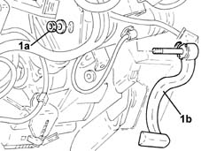

4110A22 Steering wheel position adjustment LEVER/KNOB - R.R.
- Path
- Procedures > 41 STEERING > 4110 STEERING CONTROL AND LINKAGE > 4110A steering control > 4110A22 Steering wheel position adjustment LEVER/KNOB - R.R.
- Kind
- repair procedure (removal / refitting; the operation number is the code)
- Applies to
- all engines; all production periods
- Interactive page
- https://sloeber94.github.io/elrnDB-lYpsln/en/#/2429215
Applies to: all engines; all production periods
 Removing
Removing
 Refitting
RefittingProceed with removal 7040A30 Left instrument panel lower TRIM - R.R. .
Proceed with removal 7040A26 steering column trim - r+r .
1. Undo the nut (1a) and remove the steering wheel adjustment adjustment lever (1b).

Applies to: all engines; all production periods
Refitting
RemovingPlace the steering wheel position adjustment lever in its housing and secure it using the nut.
Proceed with refitting 7040A26 steering column trim - r+r .
Proceed with refitting 7040A30 Left instrument panel lower TRIM - R.R. .